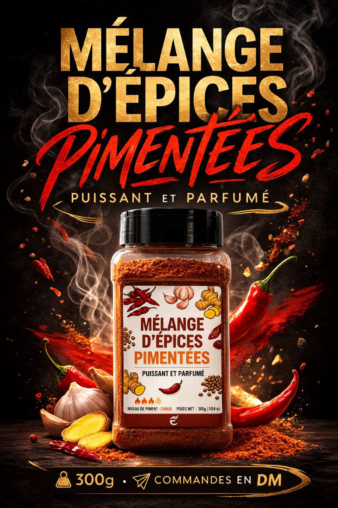
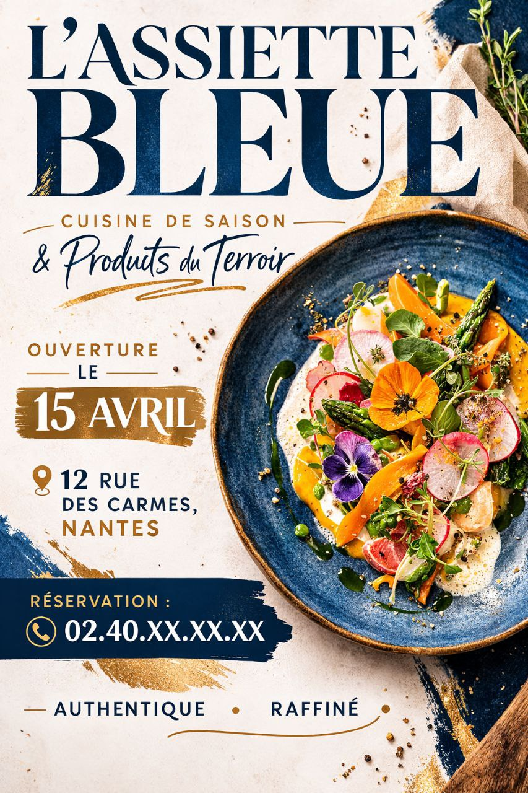

Ce qu'il te faut
Un moteur image
ChatGPT ou Gemini suffisent pour cette structure. Le plus important reste le brief, pas l'outil.
Une direction claire
Nom, ambiance, palette, type d'affiche, et éventuellement une image produit si tu en as une.
Le template
Tu ajustes les zones, tu gardes le moteur intact, et tu laisses l'IA composer.
Le prompt
Le template est construit pour garder une affiche lisible et éviter les rendus trop confus ou trop génériques.
C'est modulaire
Tu modifies l'identité, l'ambiance, les références ou quelques extras. Le moteur, lui, reste stable pour tenir le design.
3 affiches, 3 styles
Même logique, trois directions visuelles distinctes : produit, produit, puis affiche sans image de référence.


Beurre de karité
Affiche produit plus douce et naturelle, avec une hiérarchie claire.


Mélange d'épices
Direction plus chaude, plus dense, plus contrastée, avec une tension plus publicitaire.

L'Assiette Bleue
Affiche restaurant plus éditoriale, sans image produit de départ.
Envie de personnaliser ?
Chaîne ou communauté ?
Suivre les prochains kits, ou venir montrer ses essais et obtenir un retour.
La chaîne
Nouveaux kits, ressources, ateliers et annonces.
La communauté
Questions, retours, idées et corrections sur les tests.